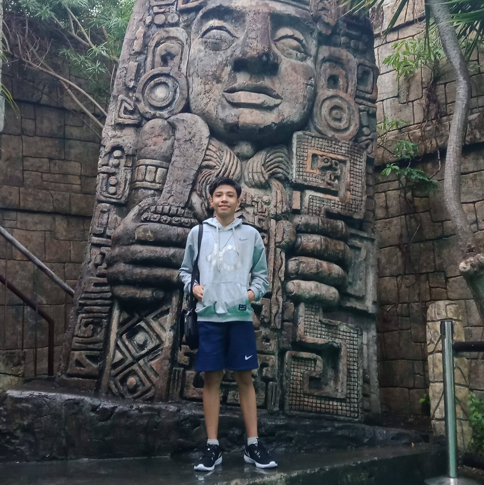

|
 |
About Me
19 years old / IT Student / Web Developer
My Name is Francis Louie G. Antonio, I was born on September 27, 2002 and currently
lives in Quezon City. I enrolled in the University of the East Caloocan for a Bachelor of
Science in Information Technology. I love creating and designing playing basketball, an
application and playing a video games. I have one& brother and one sister. I'm also a
friendly person and a loving owner of a dog named Copper. I have skills
like Teamwork, the Ability to work under pressure, and Leadership. I also became a leader in research and work immersion when I was in grade 12. My
weaknesses are public speaking, perfectionism, and on-the-spot interview. I want
to become a web developer and work for big companies. I want to learn
how to drive a car but unfortunately I don't have a driver's license. when I
become successful, I will help people especially the elder because I
doesn’t want to see the elderly struggling and lastly I believe in saying
“EVERY PRACTICE WAS A LEARNING PROCESS”


|
|
|
.png)


Elementary
Santo Nino Parochial School
Bukidnon Street, Alicia , 1105
Quezon City, Metro Manila
2008-2013
High School
Quezon City Academy
1010 Epifanio de los Santos Ave,
Bago Bantay, Quezon City,
1105 Metro Manila
ICT
2014-2018
College
University of the East
105 Samson Road, Sangandaan,
Caloocan, Philippines
20181113111
Web Development
Software engineer
Quality assurance
2nd Year
College of Engineering
Information Technology |
|
|
Interest & Hobies
üèÄ Basketball
üéÆ Playing video games
üçü Eating
üíª Programming
üé¨ Watching Movies
Contacts
üìû 09666376662
üè† Seminary Road Bahay Toro
Quezon City
üìß antonio.francislouie@ue.edu.ph
| |
|
|
↠ Copyright © 2022 Nicolas N. Ponce III & Francis Louie Antonio | ALL RIGHTS RESERVED ↞
|
.png)
.jpg)